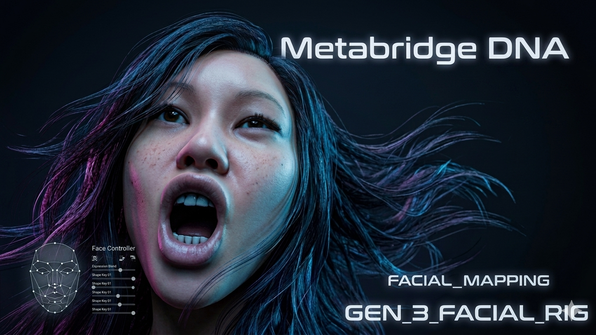
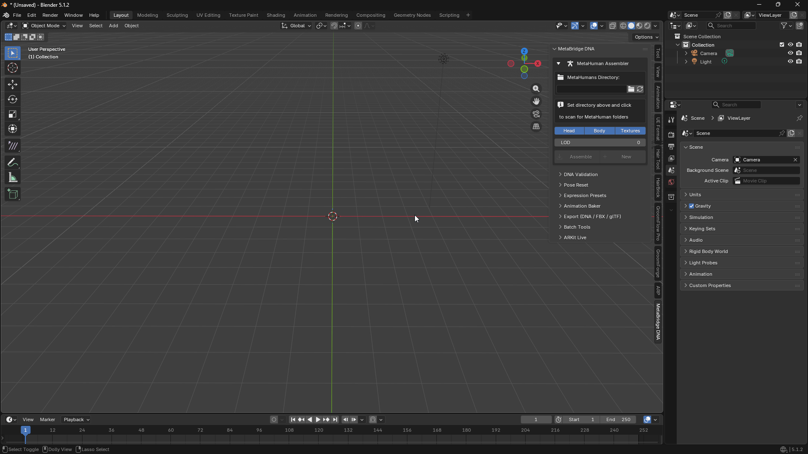
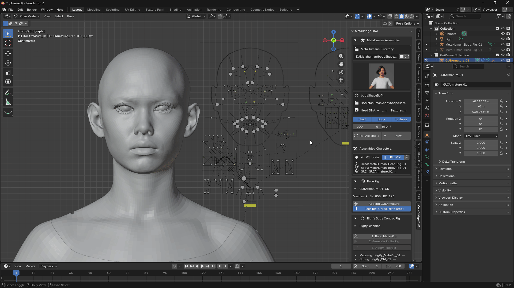
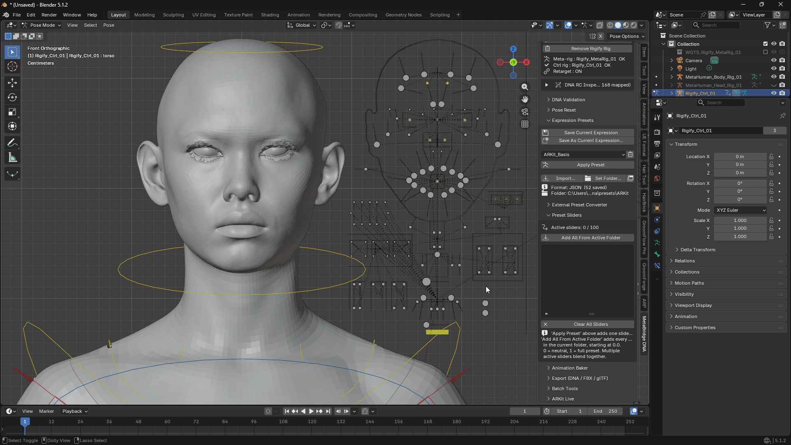
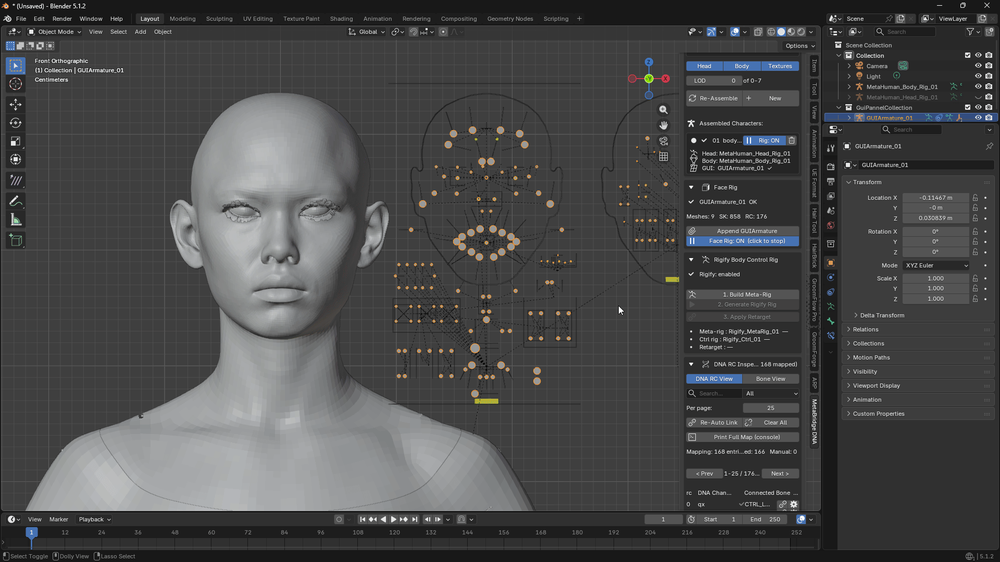

MetaBridge DNA — User Guide
What's New
v1.7.0 — Live Corrective Sculpting
Live Corrective Sculpting (NEW)
- NEW: Live Corrective Sculpting panel — pose the character, then sculpt directly on top of that pose to add or fix a shape correction (a muscle bulge on a bent arm, a wrinkle at a joint...). It plays back automatically from then on, every time the pose repeats. Works on both the face and the body. See section 8.
- A correction sculpted on the skin automatically carries over to any clothing worn on the character, so a sleeve bulges along with the arm underneath it.
- Any correction can be switched to Manual and adjusted by hand with a slider instead of following the pose.
- Export / Import saves a sculpted correction to a file so it can be shared with another character or another user with the same body/head.
v1.6.0 — Wearables, Body Blend improvements, Rigify body rig polish
Wearables (NEW)
- NEW: Wearables panel — dress a character in clothing (FBX) and hair (Alembic
.abc). See section 7. - Clothing now fits properly at the collar, doesn't tear or balloon, and adapts to the character's real body shape instead of just its skeleton.
- A Clothing Offset slider lets you float clothing slightly off the skin if it's clipping.
- NEW: rig any mesh in your scene as clothing (Make + Bind) — no MetaHuman-compatible FBX needed. Includes shoes, gloves, and head accessories.
- Hair now keeps its imported shape and follows the head correctly, including through Body Blend changes.
Body Blend
- The bundled character library now has 39 bodies: the 29 standard MetaHuman types plus 10 child bodies.
- Posing the face on a blended character no longer resets it to the original build.
- Replace and the weight sliders now survive saving/reloading the file and reloading the addon.
- Fixed a blend sometimes failing to build with a confusing error.
- Blended characters now shade smoothly and have correct UVs, matching a normal Assemble.
Archetype Library
- Export now saves exactly the sources listed in the Body Blend panel, instead of scanning whatever folder happened to be open.
- Loading a library replaces the previous one instead of piling up duplicate rows.
- You can build entirely from a library — the original
.dnafiles don't need to still exist.
Rigify body rig
- NEW: Import FBX Animation (Beta) — apply a MetaHuman animation exported from Unreal onto the body and head at once, automatically. See section 5.
- Fixed the upper body twisting incorrectly with hip movement, a floor gap at the foot, and feet dragging when the torso moves.
- Muscle/twist correctives no longer lag a frame behind.
- Show RBF Controls now always appears in the right place, even after adjusting Body Blend.
General
- Loading DNA with Load Head DNA / Load Body DNA now works with export and Wearables too.
- Material defaults: drop a
material_defaults.jsonnext to the addon to auto-apply your preferred material look to every new character. - Panels are less cluttered — tips now live in this guide and in each button's tooltip.
v1.5.0 — Body Blend (experimental) + individual DNA loading
- NEW: Body Blend panel — combine two or more MetaHuman body types (and their matching heads) into a brand-new blended character, with a per-source weight slider for each.
- Live Preview — dragging a weight slider updates the character on screen in real time.
- Replace toggle — overwrite your last Body Blend character in place instead of adding a new slot every time.
- Compact archetype libraries — pack many body/head archetypes into a single small .json file.
- Individual DNA loading restored — Load Head DNA... / Load Body DNA... buttons are back in the main panel.
v1.3.0 — Body Correctives & auto-reconnect - Body Correctives: realistic secondary deformation (shoulder/hip muscle bulge, limb twist correction) powered by the character's own DNA file. - Manual fine-tuning (RBF Controllers): hand-adjust specific spots with helper bones and blend sliders. - The body rig reconnects itself automatically when you reopen a saved file.
What is this addon?
MetaBridge DNA lets you bring Epic Games MetaHuman characters into Blender, pose their faces in real time, and export them back out.
With it you can:
- Load a MetaHuman character (head + body) into Blender
- Move sliders or bones to make facial expressions — no shape key editing needed
- Save your favorite expressions as reusable presets, and blend several at once
- Drive the face live from an iPhone using Apple's Live Link Face app
- Build an animatable body rig (Rigify) for the character
- Blend multiple bodies together, and dress the result in clothing and hair
- Export everything back to DNA, FBX, or glTF
Everything is in one place: open the N panel on the right side of the 3D Viewport, and look for the MetaBridge DNA tab.

1. Loading a Character
Steps:
- Click the folder icon and pick the folder that contains your MetaHuman characters.
- Click a character's thumbnail to select it.
- Turn Head / Body / Textures on or off, depending on what you want to load.
- Pick a LOD level (0 = highest quality, higher numbers = lighter/faster).
- Click Assemble.

Good to know:
- You can load more than one character — click New to add another one as a separate slot.
- The list at the bottom shows every character currently in your scene. Click the radio button next to one to make it "active".
- The trash icon removes a character from the scene.
- If you want to load a different LOD later, change the LOD number and click Re-Assemble.
- Need to load one specific
.dnafile? Use the Load Head DNA... / Load Body DNA... buttons next to Assemble. - Material defaults: if a
material_defaults.jsonfile is present in the addon folder, its BSDF values are applied automatically to newly created materials on every Assemble. Existing (already-created) materials are never overwritten, so your edits are preserved across Re-Assembles. - All meshes are automatically set to Smooth Shading on Assemble.
2. Making Facial Expressions (Face Rig)
Steps:
- Click Append GUIArmature — this adds the control rig you'll use to make expressions.
- Turn Face Rig: ON.
- Select the GUIArmature in the viewport, go into Pose Mode, and move its bones. The face updates live as you move them.

Good to know:
- You're never editing shape keys directly — you're only moving control bones.
- If you don't see any reaction when moving a bone, double check Face Rig is switched ON.
3. Expression Presets (save & reuse expressions)
Instead of posing a face from scratch every time, save an expression once and reuse it — and mix several expressions together.
Saving a preset:
- Pose the face the way you want it.
- Click Save As Current Expression... and give it a name.
- To update a preset you already saved, select it in the list and click Save Current Expression.
Using a preset:
- Pick a preset from the dropdown.
- Click Apply Preset — it's added to the Preset Sliders list, already turned on.
- Drag its slider between 0 (no expression) and 1 (full expression).
Blending multiple expressions:
- You can have many sliders active at once — they combine automatically.
- Add All From Active Folder loads every preset in your current folder as a slider, all starting at 0.
- The X button removes one slider; Clear All Sliders resets everything back to neutral.
- Sliders are normal Blender properties, so you can keyframe and animate them.

Good to know:
- Set Folder... lets you choose where presets are saved/loaded from.
- Import... lets you bring in a preset file from anywhere on your computer.
Converting presets from other programs:
- Convert & Import (Maya/Houdini)...: brings in a saved pose from Maya or Houdini and matches its bone names automatically.
- Convert ARKit Payload...: a one-time setup step that generates the 52
ARKit_...presets used by ARKit Live.
4. ARKit Live (real-time face tracking from your iPhone)
Stream your real facial expressions live from an iPhone straight onto the MetaHuman character, using Apple's free Live Link Face app.
Setup:
- Make sure your iPhone and your computer are on the same Wi-Fi network.
- In the Live Link Face app, use normal streaming mode (not "MetaHuman Animator" mode).
- In the app, set the target IP address to your computer's address, and the port to 11111.
- In Blender's ARKit Live panel, leave Host as
0.0.0.0and Port as11111, then click Connect.

Tuning the feel of the tracking:
| Setting | What it does |
|---|---|
| Smoothing | Makes movement smoother and less jittery. Higher = smoother but slightly slower to react. |
| Deadzone | Ignores small, noisy values so the face doesn't drift or twitch at rest. |
| Gain | Boosts expressions that don't reach full strength. |
Recording:
- Click Record to save the live performance as keyframes on the timeline. Click Stop Recording when done.
- Or use Load Live Link Face CSV... to bake in a pre-recorded CSV file.
Head Rotation (Experimental):
- Requires the body's Rigify rig to be set up first, with Apply Retarget and Link Head Rig both done.
- If the head turns the wrong way on some axis, use the Invert Pitch / Yaw / Roll buttons.
Troubleshooting:
- Nothing moves at all: check for a red Apply error message and make sure the correct character is Activated.
- Face looks slightly off at rest: use the Calibrate feature in the Live Link Face app first, then fine-tune with Deadzone/Gain.
5. Rigify Body Control Rig
Turns the MetaHuman body into a fully animatable rig using Rigify.
Requires the Rigify addon to be enabled first (Edit > Preferences > Add-ons, search for "Rigify").
Steps, in order:
- Build Meta-Rig — creates a draft skeleton matching the body.
- Generate Rigify Rig — turns the draft into a real, posable control rig.
- Apply Retarget — connects the control rig so it drives the MetaHuman body. Body correctives are registered at this step.
⚠️ If the draft skeleton from step 1 wasn't positioned correctly, this can distort the mesh. Check that everything looks right after step 2, before applying.
- Link Head Rig — connects the head so it moves with the body.
- Remove Rigify Rig removes everything from steps 1–4 if you need to start over.

Body Correctives — automatic muscle & twist detail
Once Apply Retarget is done, the body rig automatically adds secondary deformation (shoulder blade, muscle bulge, limb twist) using data built into the character's DNA. No setup needed.
- Body Correctives RBF: ON/OFF — toggles the RBF solver layer. Leave it ON for the most realistic result. Basic twist/muscle correction stays active either way.
- If a character's DNA doesn't include this data, the button shows "none in this DNA" and is grayed out.
Fine-tuning by hand (RBF Controllers)
For spots that need a manual touch-up beyond the automatic result:
- In Pose Mode, select the control bone for the area you want to adjust (e.g.
shoulder.L). - Click Show RBF Controls — small diamond-shaped helper bones appear for that area.
- Adjust the influence slider (0–1) per bone in the Active RBF Controllers list:
0= automatic corrective off (bone stays at rest/neutral)1= automatic corrective fully applied (default)- Rotate a helper bone by hand to add an extra manual correction on top of the automatic result.
- Click Hide when done to tidy the viewport.
Rotating a helper bone at
influence = 1stacks your manual rotation on top of the full automatic result. Atinfluence = 0only your manual rotation is used.
Import FBX Animation (Beta)
Apply a MetaHuman animation exported from Unreal (FBX) straight onto this character — body and head animate together, automatically, even if the character's proportions don't exactly match the source animation.
- Click Import FBX Animation... and pick the
.fbxfile. -
Both the body and head are keyframed with the retargeted animation.
-
If this character has an active Rigify Apply Retarget set up, turn it off first — otherwise the control rig keeps overriding the imported animation and you won't see it play.
Good to know:
- Once Apply Retarget and Link Head Rig are set up, the connection is saved with your file — reopening it works without re-clicking Apply Retarget.
- The Rigify shoulder bone (
shoulder.L/R) must be manually elevated when raising the arm. Key the shoulder bone alongside the arm for the most natural shoulder deformation.
6. Body Blend (experimental)
Combine two or more MetaHuman body types — and their matching heads — into a brand-new blended character. Found in its own Body Blend (experimental) panel, collapsed by default.
Adding sources:
- Use Base DNA — adds the addon's own reference character from the
base_dna/folder. - Add Folder... — scans a folder for
*_Body.dnafiles and adds every one it finds. - Add Body DNA — add one specific
.dnafile by hand. - Load Library... — load a compact archetype library and add every archetype in it as a source.
Weights don't need to add up to anything in particular — they're normalized automatically. Use Base DNA starts at 1.0; all other sources start at 0.0.
The primary row:
The highlighted row is the primary source — it supplies the topology, skin weights and face rig. Every other row just contributes its shape. If you only add library entries (no real .dna row), the addon quietly uses its own reference character as the primary behind the scenes, so you can build purely from a library.
Building:
- Add and weight your sources.
- Click a row to make it the primary.
- Pick a LOD level.
- Give it a Name.
- Click Build Blended Body.
Replace:
Turn on Replace to overwrite your last Body Blend character in place instead of adding a new slot every time.
Live Preview:
After a Build, dragging any weight slider re-blends and updates the character already on screen. Turn Live Preview off if it slows things down.
Good to know:
- The head only blends if every weighted row has head data. If one is missing, the body still blends but the head is skipped and a note explains why.
- Textures: after building, the addon looks for a
Mapsfolder next to the primary DNA, then falls back tobase_dna/Maps. - Shape keys on the blended head are copied from the primary head source only.
- Posing/expressions work normally on a blended character, and stay correct even after you go back and adjust the weight sliders.
The base_dna/ folder:
Put your own reference Body.dna and matching Head.dna here (metabridge_dna/base_dna/). This is what Use Base DNA adds, and what Build falls back to when nothing else is weighted.
Compact archetype libraries:
- The bundled library ships 39 archetypes: the 29 standard MetaHuman body types plus 10 custom child bodies, each with matching head data — blend child body types in directly for smaller/younger proportions.
- Export... — packs exactly the sources currently listed in the panel into one compact
.jsonlibrary. If the list is empty, it instead scans a folder you pick (including subfolders). - Load Library... — loads a library, one row per archetype, replacing any previously loaded library rows (your own
.dnarows stay). You don't need to keep the original.dnafiles around once you have a library.
7. Wearables (experimental)
Beta — weights can still look off during animation/posing in some cases. Being actively improved; touch up in Weight Paint mode if needed.
Attach clothing (FBX) and hair/grooms (Alembic .abc) to the active character — found in its own Wearables (experimental) panel, collapsed by default. Works on any assembled or Body-Blend-built character.
There are two ways to dress a character: import a clothing FBX built for a MetaHuman skeleton, or rig any mesh already in your scene yourself. Both end up following the character the same way afterward.
Clothing (FBX):
- Top... / Bottom... / Full... — import a MetaHuman-compatible clothing
.fbxand attach it to the body, tagged with that category. - Head Accessory... — same idea, for things that attach to the head instead (glasses, earrings, ...).
- Retarget To Body Proportions (on by default): fits the garment to this character's own proportions instead of the body it was originally made for — without going skin-tight, so a loose shirt stays loose.
- Clothing automatically avoids clipping into the character's skin.
- Clothing Offset slider — floats all worn clothing slightly off the skin, if you want extra breathing room. Updates live.
- Categories replace what they conflict with: a new Top clears any worn Top/Full; a new Bottom clears Bottom/Full; a new Full clears both. Head accessories never auto-remove anything.
- LOD0 only: if the FBX bundles multiple LODs, only LOD0 is kept.
Scene Mesh Garment (Make + Bind):
For a mesh already in your scene that doesn't have a MetaHuman skeleton of its own.
- Select the garment mesh and click Make Top / Bottom / Full / Shoes / Gloves / Head Acc — this fits it to the character and rigs it to move with the character's skeleton. Works best on a garment already modeled to roughly fit the character.
- Click Bind Garment To Character — attaches it to the active character, exactly like an imported clothing FBX from here on (category replacement, Body Blend live follow, Refit, Clothing Offset all apply).
If deformation looks off in an extreme pose at a tight spot (armpits, between the thighs), touch it up in Weight Paint mode — everything else is unaffected.
Hair (Alembic):
- Import Hair... — imports a
.abcgroom and parents it to the head. Defaults are tuned for MetaHuman groom exports (Scale 0.01, Rotation X -90°, Z -180°) — adjust in the operator panel (bottom-left after import) if your source is different. - Bind To Head Surface (on by default) — hair follows the head as it deforms, including through Body Blend changes, without collapsing onto the scalp.
Good to know:
- Clothing FBX placement depends on the file sharing bone names with a MetaHuman skeleton.
- Imported/rigged wearables aren't tracked as part of the character slot the way body/head meshes are — rename, move, or export them like any other Blender object.
8. Live Corrective Sculpting (Beta)
Beta — a correction sculpted with only one pose holds steady if you pose further than that; sculpt more than one pose for the same correction if you want it to keep changing shape further into the pose. Sculpted corrections stay inside Blender only — they don't currently export back out to Unreal or other tools.
Pose the character, then sculpt directly on top of that pose — the sculpt becomes a correction that fades in and out automatically from then on, every time the character moves toward and away from that pose. No keyframing needed. Works on both the face and the body, and automatically carries over to any clothing worn on the character.
Steps:
- Open the Live Corrective Sculpting (Beta) panel.
- Pose the character the way you want to fix or add detail to (a bent elbow, a stretched shoulder, an expression...).
- Type a name for the correction in the Corrective field.
- For a body correction, also pick which bone should trigger it from the Body Driver Bone list.
- Click Begin (Face) or Begin (Body) — this enters Sculpt Mode on a fresh shape key, already at full strength.
- Sculpt the correction.
- Click Finish Sculpt.
Editing an existing correction:
Click the sculpt icon next to a correction's slider to re-enter Sculpt Mode on it directly and refine it further. Pose the character close to where it was originally sculpted first, for the most accurate result — this doesn't return the character to that pose for you automatically.
Manual mode:
Click the tool icon next to a correction to switch it to Manual — its slider can then be dragged by hand instead of following the pose. Useful for previewing a correction at any strength, or hand-animating it. Click it again to go back to automatic.
Clothing:
A correction sculpted on the skin automatically carries over to any clothing worn on that character. This happens on its own whenever you finish a sculpt or import one — click Sync to Wearables if you add new clothing afterward and want it to catch up. Each garment gets its own copy of the correction, with the same Manual/slider/edit controls as the skin's, listed right underneath it.
Sharing corrections:
- Export... saves every correction on a character to a
.jsonfile. - Import... brings corrections from a file onto another character. It only works if that character has the same body/head as the one the file was exported from (built by this addon at the same LOD) — importing onto a mismatched character is rejected rather than corrupting the mesh.
9. Exporting
- DNA: separate Head and Body buttons (head and body are always two separate
.dnafiles). - FBX / glTF: Full / Head / Body buttons. Choose whether to include the control rig and animation in the export dialog.
Batch Tools:
- Assemble All Characters — loads every character found in your folder in one go.
- Export All Slots — exports every loaded character at once.
10. Other Useful Tools
- DNA RC Inspector: shows how the control bones are connected to the character's DNA data. Mainly for troubleshooting a specific control.
- DNA Validation: checks whether a
.dnafile is valid before you use it. - Pose Reset: instantly resets the face back to neutral.
- Animation Baker: turns your live/keyframed facial performance into a permanent, exportable animation.
Quick Tips
- LOD 0 is always the highest quality — use it unless you need better performance.
- You can combine live ARKit tracking with manual Preset Sliders — nudge sliders by hand if the tracking doesn't quite nail an expression.
- If something that used to work suddenly doesn't move, check that Face Rig or the character's Rig ON/OFF isn't accidentally switched off.
- For the most realistic shoulder deformation when raising the arm, key both the arm control and the
shoulder.L/Rbone together.